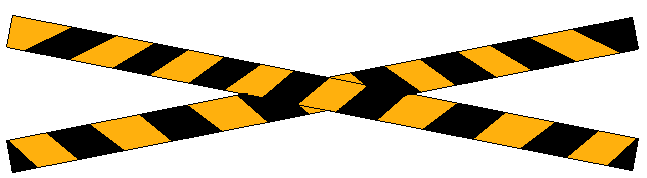

Железничка пруга је пут којим се обавља железнички саобраћај возовима. Под пругом подразумевамо колосек који чине две металне шине које су спојене са праговима. Точкови воза се котрљају шинама.Како би се саобраћај на прузи одвијао несметано и сигурно за све учеснике у њему, при укрштању пруга са друмским саобраћајем постављају се рампе, опремљене знаком или светлосном сигнализацијом.
Пруга за савремене електричне возове може имати само једну шину.

